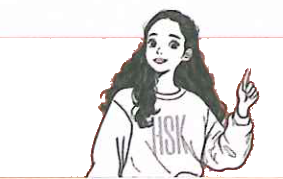
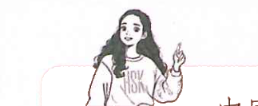
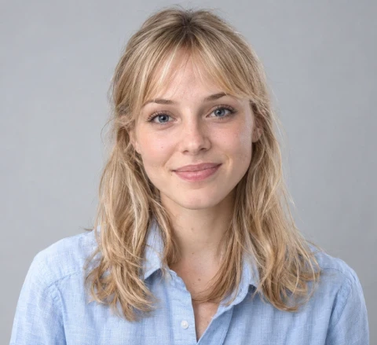

1汉语的基本语序Basic Word Order in ChineseБазовый порядок слов в китайском языке
汉语的基本语序是： 主语+谓语+宾语。例如： 我 （主语） 叫 （谓语） 陈天中 （宾语）。The basic word order in Chinese is: Subject+Predicate+Object. For example: 我 (Subject) 叫 (Predicate) 陈天中 (Object)。Базовый порядок слов в китайском языке: Подлежащее+Сказуемое+Дополнение. Например: 我 (Подлежащее) 叫 (Сказуемое) 陈天中 (Дополнение).
大声朗读。Read aloud.Прочитайте вслух.
(1) 你叫什么名字？
(2) 我叫白家月。
(3) 我是学生。
课文 3Text 3Текст 3
在校园里， 李文和白家月第一次相遇。Li Wen and Bai Jiayue met for the first time on campus.Ли Вэнь и Бай Цзяюэ впервые встретились в кампусе.
朗读对话。Read the dialogue aloud.Прочитайте диалог вслух.


Bái Jiāyuè白家月Li Wen: Hello! My name is Li Wen.
Bai Jiayue: Hello! My name is Bai Jiayue.
Li Wen: Nice to meet you.
Bai Jiayue: Nice to meet you too.
Ли Вэнь: Привет! Меня зовут Ли Вэнь.
Бай Цзяюэ: Привет! Меня зовут Бай Цзяюэ.
Ли Вэнь: Приятно познакомиться.
Бай Цзяюэ: Мне тоже приятно познакомиться.